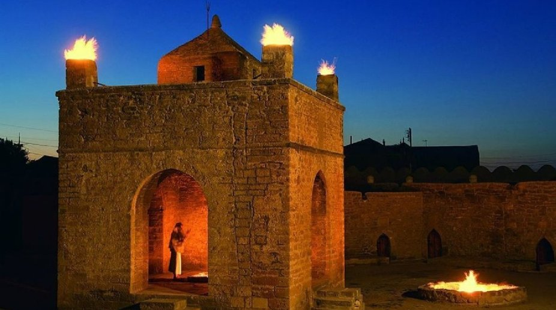
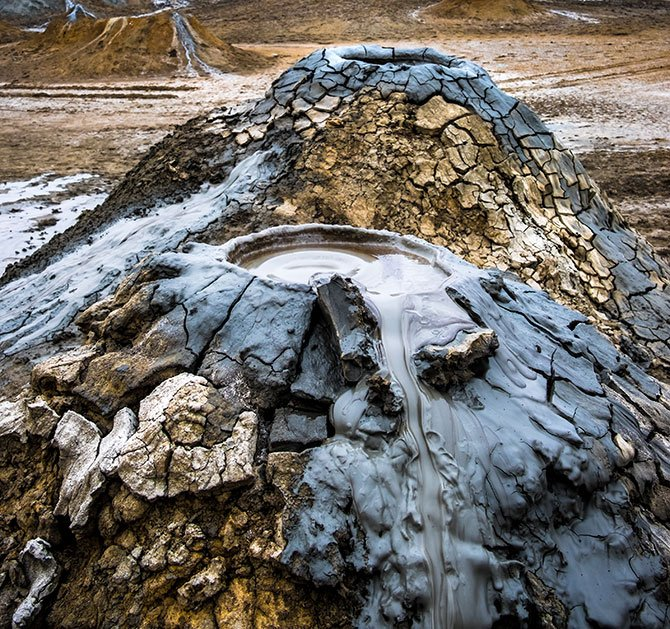

Bakü'nün Kültürel Mirasları
Kız Kalesi (Maiden Tower)

Kız Kalesi, Azerbaycan'ın başkenti Bakü'de, İçeri Şehir bölgesinde yer alan tarihi bir kuledir. 12. yüzyılda inşa edildiği düşünülen kule, şehrin sembollerinden biridir ve UNESCO Dünya Mirası Listesi'nde yer almaktadır. Kız Kalesi, mimari yapısıyla dikkat çekerken, aynı zamanda tarihi ve kültürel önemiyle de öne çıkmaktadır. Kule, ziyaretçilere Bakü'nün eski şehir bölgesinin ve Hazar Denizi'nin eşsiz manzaralarını sunmaktadır.
Daha fazla bilgi için buraya tıklayabilirsiniz.
Şirvanşahlar Sarayı (Palace of the Shirvanshahs)

Şirvanşahlar Sarayı, İçeri Şehir bölgesinde bulunan ve 15. yüzyılda Şirvanşahlar hanedanı tarafından inşa edilen muhteşem bir saray kompleksidir. Bu saray, Bakü'nün en önemli tarihi yapılarından biridir ve UNESCO Dünya Mirası Listesi'nde yer almaktadır. Saray kompleksi, birçok bina, türbe, cami ve hamamdan oluşmaktadır. Şirvanşahlar Sarayı, Azerbaycan'ın zengin tarihini ve mimari mirasını yansıtmaktadır.
Daha fazla bilgi için buraya tıklayabilirsiniz.
Ateşgah Ateş Tapınağı (Ateshgah of Baku)
Ateşgah Ateş Tapınağı, Bakü'nün yaklaşık 30 km doğusunda, Surakhani kasabasında yer alan bir tapınaktır. 17. ve 18. yüzyıllarda inşa edilmiş olan bu tapınak, Zerdüştler ve Hindular tarafından kutsal bir ibadet yeri olarak kullanılmıştır. Tapınak, avlu etrafına inşa edilmiş birkaç hücre ve merkezi bir sunağa sahip olup, sürekli yanan doğal gaz ateşi ile ünlüdür.
Daha fazla bilgi için buraya tıklayabilirsiniz.
Çamur Volkanı
Lökbatan Çamur Volkanı, Azerbaycan'ın Bakü şehrinin 15 km güneybatısında yer alan Lökbatan kasabası yakınlarında, Hazar Denizi kıyısında aynı adlı petrol ve maden sahasında bulunan çamur volkanıdır. Püskürme sayısına göre "dünya rekortmeni" olan bu çamur volkanı, Azerbaycan'ın en aktif, dünyanın ise en aktif beş çamur volkanından biridir.
Daha fazla bilgi için buraya tıklayabilirsiniz.